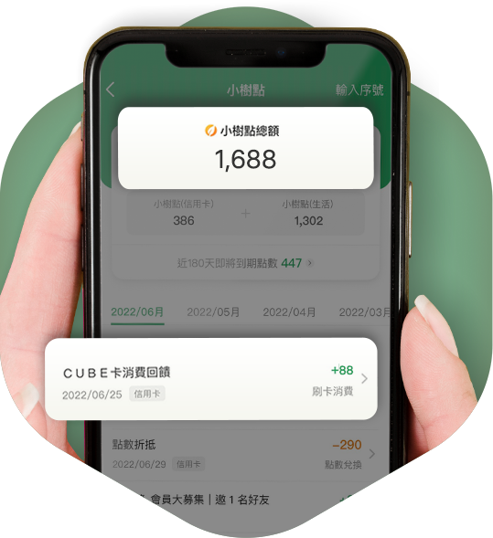

聰明兌點 質感生活
小樹點更好用
小樹點為國泰推出的集團點數
小樹點1點=新台幣1元
國泰優惠APP提供集團客戶多元的點數使用場景
全新上線之花點商城，擁有眾多知名連鎖品牌電子票券、百貨即享券及優質宅配商品，讓會員能靈活運用點數提升質感生活。
小樹點為國泰推出的集團點數
小樹點1點=新台幣1元
國泰優惠APP提供集團客戶多元的點數使用場景
全新上線之花點商城，擁有眾多知名連鎖品牌電子票券、百貨即享券及優質宅配商品，讓會員能靈活運用點數提升質感生活。
您可以於國泰優惠APP、小樹購官網於綁定小樹點(信用卡)後查看小樹點合併總額，也可於 國泰優惠APP 同時查詢兩者的各別餘額，並可以參考下方說明於各平台分別查詢小樹點餘額：
您可以於下列平台查詢小樹點(信用卡)的點數餘額。
- 國泰優惠APP
- 國泰世華網銀APP
- 國泰世華網路銀行
- 國泰世華LINE個人化服務
- 國泰世華智能客服
- 國泰世華信用卡帳單
您可於下列平台查詢小樹點(生活)的點數餘額。
- 國泰優惠APP
- 國泰人壽APP
- 小樹購官方網站
- momo購物網
國泰世華銀行發行之信用卡正卡及簽帳金融卡持卡人消費皆可享小樹點(信用卡)回饋，但是經過國泰世華銀行公告排除不適用活動的卡別，則無法享有參與本活動的權利。小樹點(信用卡)累積辦法詳情內容，請參閱國泰世華銀行官網。
小樹點(生活)為國泰關係企業「神坊資訊」所發行，您可以透過以下方式獲取點數：
1. 國泰優惠APP每月皆會推出各式的行銷活動，您可以參加每週一三五搖一搖、每月5號會員日或任務牆等活動獲得點數獎勵，同時也可透過「點數轉換」的服務，將您的台塑加油金轉換成小樹點(生活)。
2. 參與本集團關係企業的行銷及業務推廣活動，例如：國泰世華銀行財富管理貴賓生日禮，「小樹購」消費贈點優惠，或下載國泰人壽APP，綁定Cathay Walker Plus會員即可獲得點數獎勵等，更多相關活動訊息以各單位活動公告內容為主。
3. 國泰集團關係企業的員工可透過內部活動取得，詳情請洽各公司相關單位。
您可以在國泰優惠APP花點專區、小樹購官網上合併使用。
於上述通路使用小樹點兌換或折抵時，會優先扣除您的「小樹點(生活)」，不足時才會扣除「小樹點(信用卡)」。
※未來將持續新增可合併使用的通路。
您可以在國泰優惠APP花點專區、小樹購官網上合併使用。
於上述通路使用小樹點兌換或折抵時，會優先扣除您的「小樹點(生活)」，不足時才會扣除「小樹點(信用卡)」。
※未來將持續新增可合併使用的通路。
小樹點(信用卡)效期3年，以「月份」為計算單位。
※舉例：2022/06/27消費入點50點，則該50點點數於2022/07開始計算效期，到期日為2025/06/30。
小樹點(生活)效期以各行銷及業務推廣活動之主辦單位公告為主。